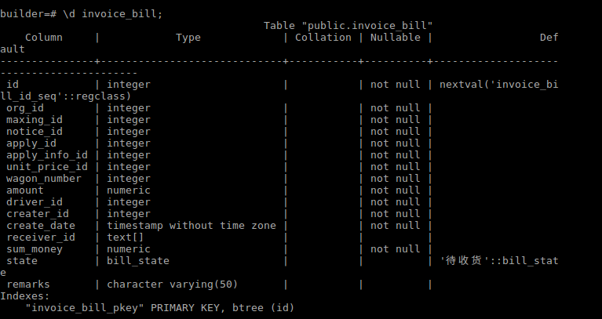
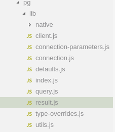

好久没有写问题处理类的博客了，正好今天解决了一个小问题，而且时间还有些，就写一下吧，作为本周的一share。
问题
背景是这样的，今天帮人写了一个查询语句，用于查询一个1（表A）对多（表B）关系中，表B的一个字段的累加和。由于表A已经连接了多张表，而且我不太原因去动那段代码，就想着用表A的id从表B中去获取，而且她已经写好了一个接口来获取列表，我索性就直接在内存里计算了。代码就不贴了，这段代码效率比较低。
问题出现了，我拿出来的数据莫名变成了字符串，数据相加以后成了字符串相加。”50”+”100” = “50100”.
原因
出现问题咱就处理吧，首先去看一下表结构:

字段是amount 类型是numeric,是数字没问题。
然后就怀疑是不是存储的时候是字符串，就去调试了一下，发现并没有问题。
那现在就是存的时候是数字，数据库里也是数字，而读取出来的是字符串。那问题肯定就是读取的时候出现问题了，读取时候调用的是node.js中’pg’这个模块，那就移步到这里去看一下。
pg模块中的目录如下：

既然怀疑是读取时候出现了问题，从这个结构中，就直接去看结果的处理部分：result.js。在这其中，发现对每个Field都有一个对应的parser，那问题自然就归结到这个Parser上了。
这个Parser是从’pg-types’中引用而来，那就从pg-types中去看一下
在这里定义了3个Parse，arrayParser、binaryParsers、textParsers，在index.js中，通过setTypeParser来设置相应类型的parese，通过getTypeParser来获取。在这里并没有看出问题，然后看了一下这个库的test，这里看到
1 | var bignum = '31415926535897932384626433832795028841971693993751058.16180339887498948482045868343656381177203091798057628' |
它其实是将numeric放到text这种format下，解析出来的自然就是text了。
既然是有意将numeric当成text来处理，那就numeric这种类型就要注意一下，在pgsql的官方文档中对其论述为：
numeric类型可以存储非常大的数字并且准确地进行计算。 我们特别建议将它用于货币金额和其它要求精确计算的场合。不过， numeric类型上的算术运算比整数类型或者我们下一节描述的浮点数类型要慢很多。
一个numeric类型的标度 (scale)是小数部分的位数，精度(precision) 是全部数据位的数目，也就是小数点两边的位数总和。 因此数字 23.5141 的精度为 6 而标度为 4 。你可以认为整数的标度为零。
这样可以思考numeric本身用来处理很大的浮点数，这种数字转换成text也能理解了
解决
由于我们的数字比较小，也就修改了一下表结构，将这numeric变成了real，这样问题就解决了。当然也可以通过ParseFloat来从表层处理一下。
探索
下边会探索一下pg的结构。这里时间限制，简单写一下依赖关系：
index.js中做聚合，聚合了client、Query、Connection、Pool等模块，
Client中依赖Connection,通过调用Connection来完成其业务
Connect中，依赖net.Socket来完成对postgresql的链接，以及在链接之上的接口；
在Client中还还依赖Query，并有一个queryQueue，来异步处理各个请求。
在Query中，依赖一个Result模块，来对返回的数据进行解析，其调用了以上的parse模块。